PLATEAU のデータは誰でも使えます。
それでも、自分のページに載せるまでには壁があります。
たとえば
物件ページで、その建物と街を
立体で見せたい。
施設案内に、駅からの道を
3D で描きたい。
そう考えた Web 開発者。
3D Tiles・ベクトルタイル・標高を、配信元ごとに探して組み合わせる
地形の上に建物を立て、光と影をつけ、重くならないように描く
1 棟だけ塗る、マーカーを付ける、ページのボタンや一覧とつなぐ
3D や GIS の専門家でなくても、PLATEAU を自分のサービスのページで使えるように。
オープンデータを組み合わせて、
どのサイトにもなじむ街並みを、数行で。
どのサイトにもなじむ東京の街並みを、Web で使える UI として届けます。
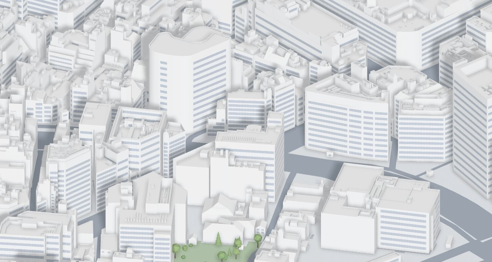
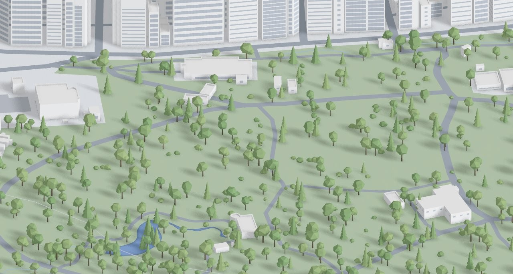
PLATEAU が整備された街なら、どこでも同じコードで。データは公開 CDN から読み込み、出典は地図の下に自動で表示します。
# インストール npm install @plateau-ui/core three import { Viewer } from '@plateau-ui/core' new Viewer({ container: 'map', center: [139.7671, 35.6812], // [経度, 緯度] zoom: 17, pitch: 60, mask: { shapes: [{ shape: 'view' }] }, })
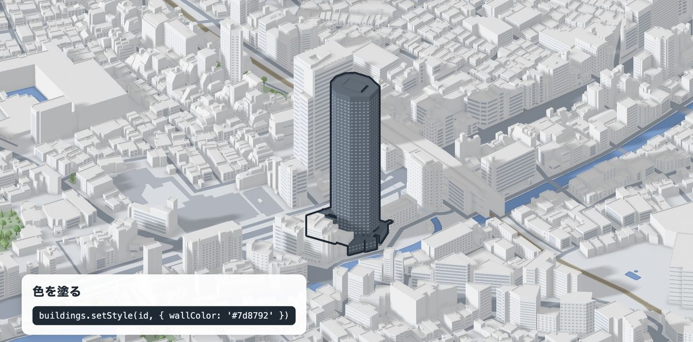
| どんな道具か | 主な使いどころ | |
|---|---|---|
| PLATEAU VIEW | PLATEAU の公式ビューア（Web アプリ） | データを見る・探す |
| CesiumJS | 地球全体を扱う 3D 地球儀エンジン | GIS・可視化のアプリを作る |
| Unity・Unreal 向け SDK | ゲームエンジン用のプラグイン | アプリ・ゲーム・XR を作る |
| plateau-ui | Web ページに載せる three.js のライブラリ | 自分のサービスのページに、街を部品として載せる |
好きな大きさの枠に入り、クリックやホバーのイベントでページの UI とつながる
three.js の知識と資産（メッシュ・ライト・マテリアル）がそのまま使える
PLATEAU の建物 ID で、選ぶ・塗る・動かす・取り寄せる
※ 用途の違いを並べたもので、優劣の比較ではありません。
建物を 1 棟ずつ動かし、
実際のサービスのページに載せます。
どれも数行。動画の第 1 部で、ひとつのタワーに順にかけています。
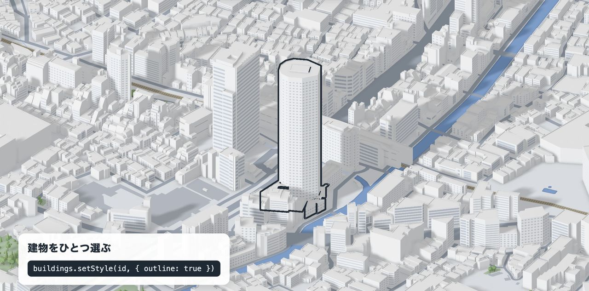
setStyle(id, { outline: true })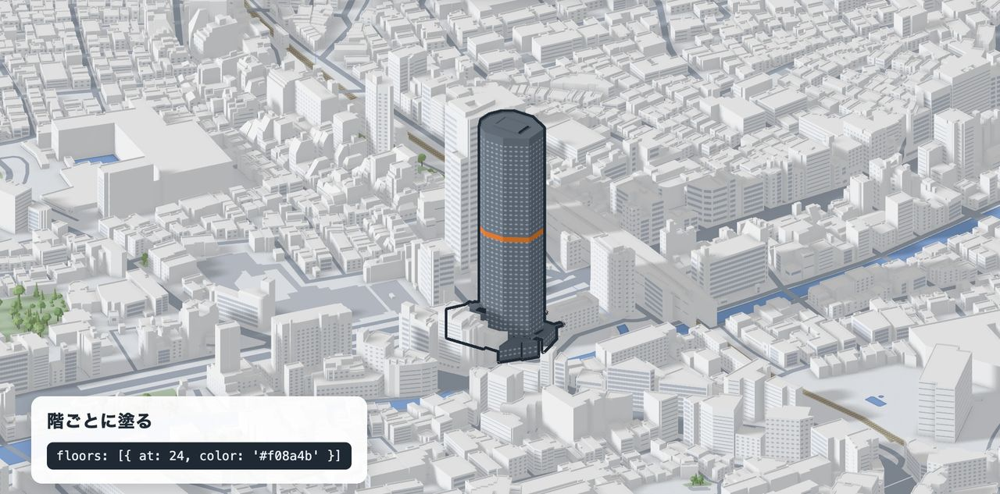
setStyle(id, { floors: [{ at: 3 }] })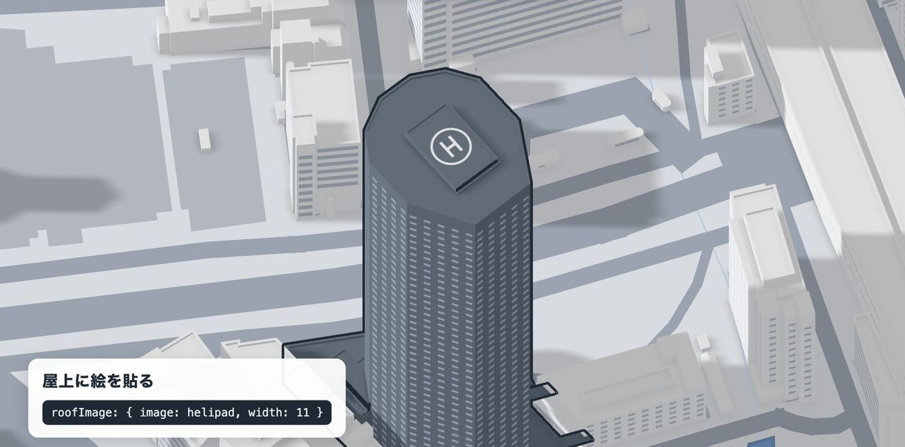
setStyle(id, { roofImage: { image } })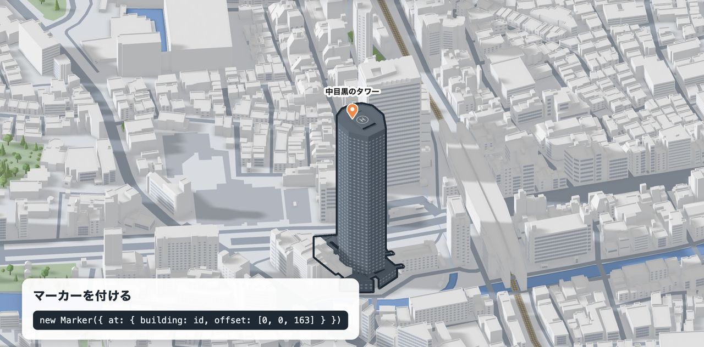
viewer.add(new Marker({ at }))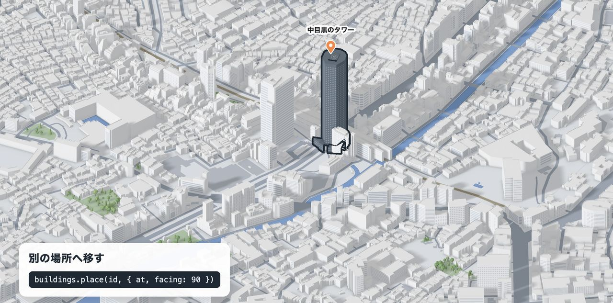
place(id, { at, facing: 90 })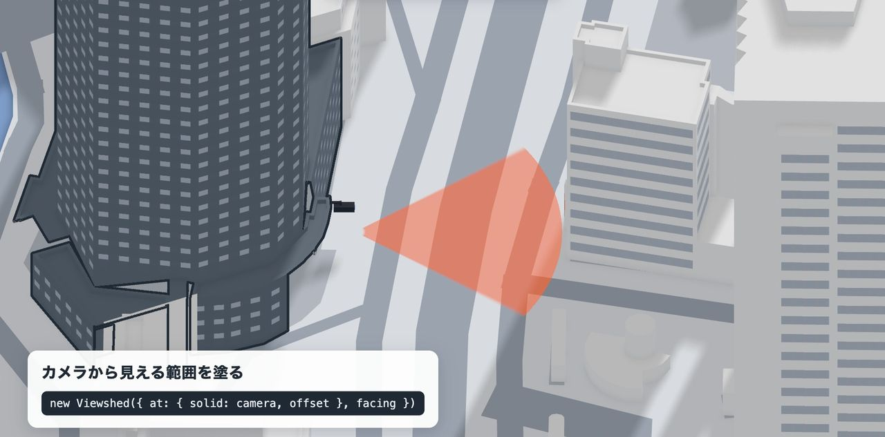
new Viewshed({ at, facing })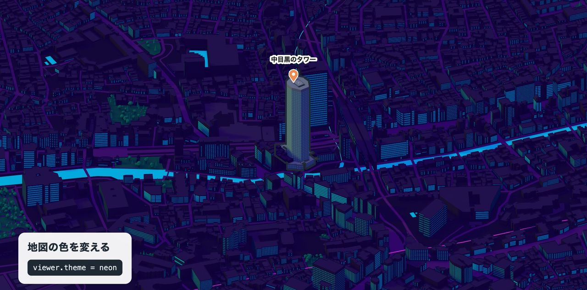
viewer.theme = { … }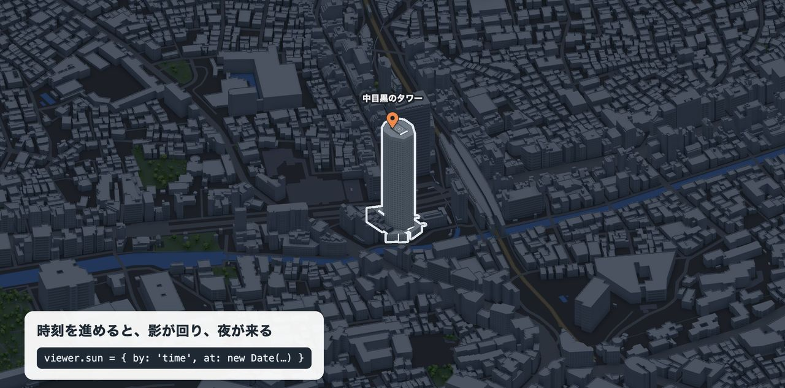
viewer.sun = { by: 'time', at }サイトのサンプルを、実際のサービスの形のページに入れたところです（ページはすべて架空のものです）。
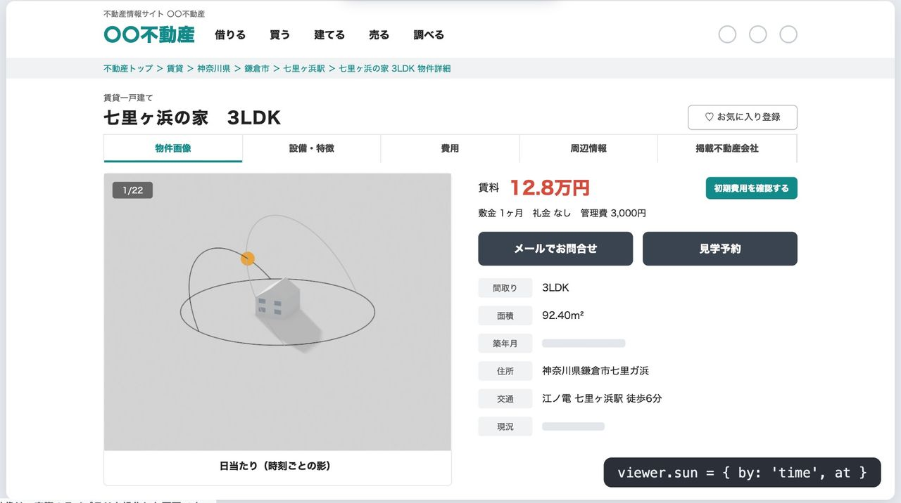
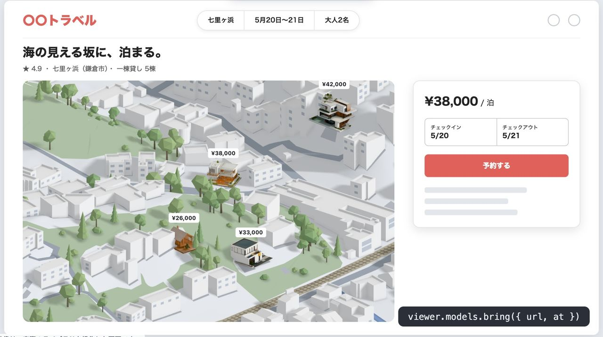
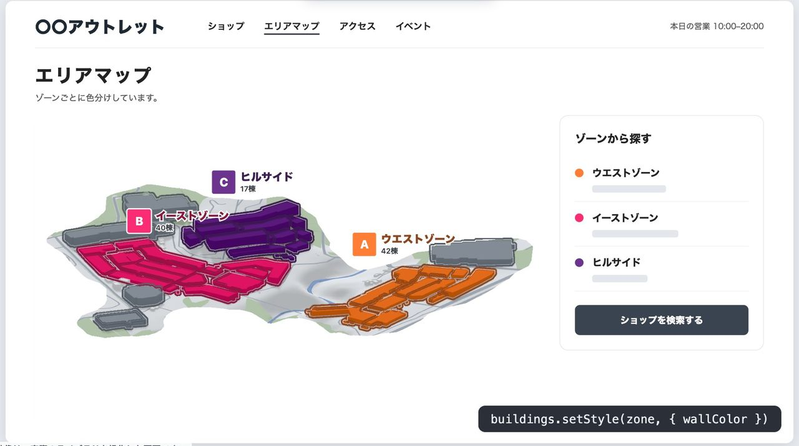
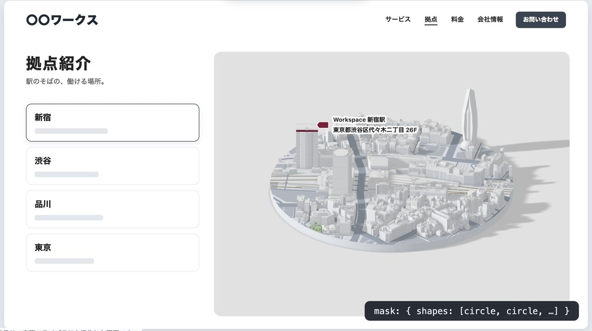
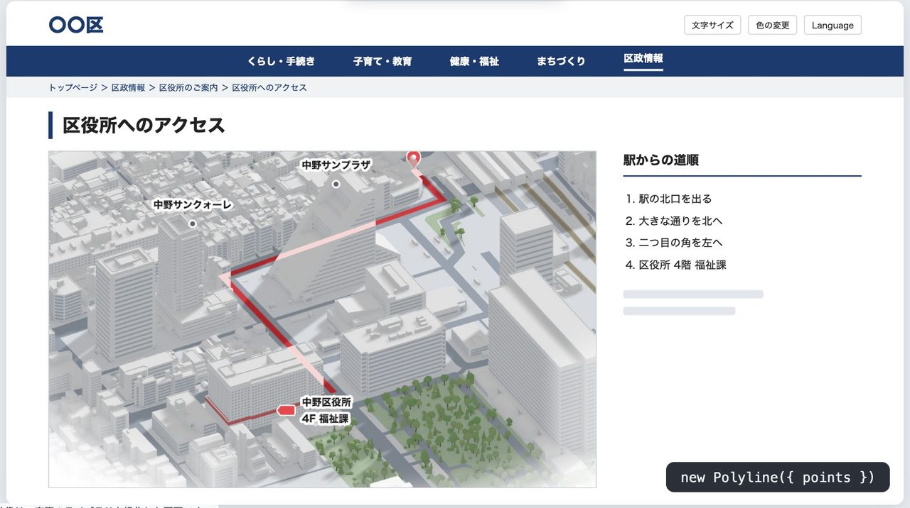
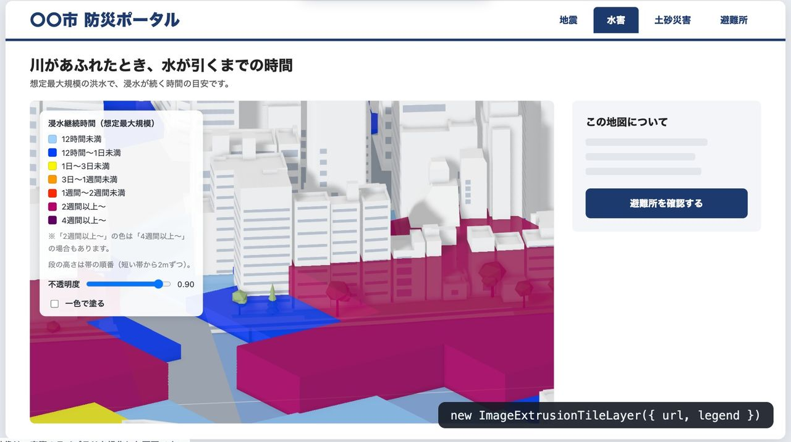
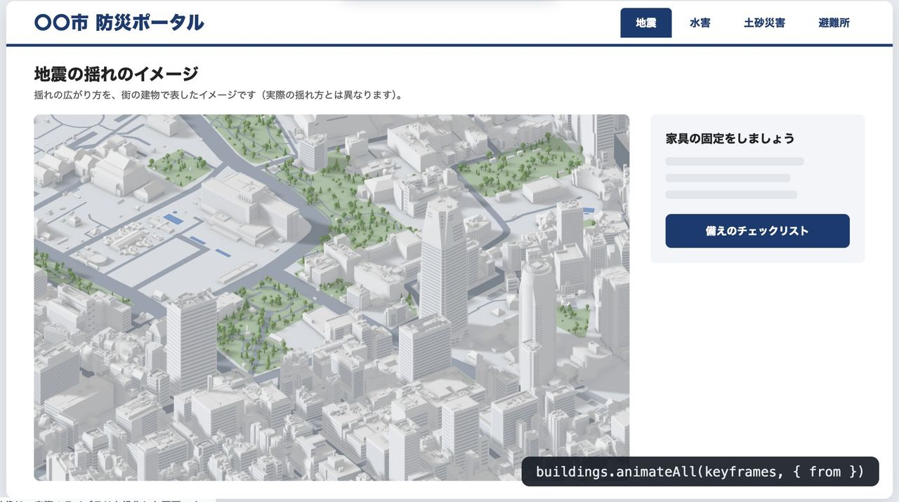
three.js の上で広げられ、
PLATEAU を使う人を増やします。
three.js でできることは、この上でもそのままできます。
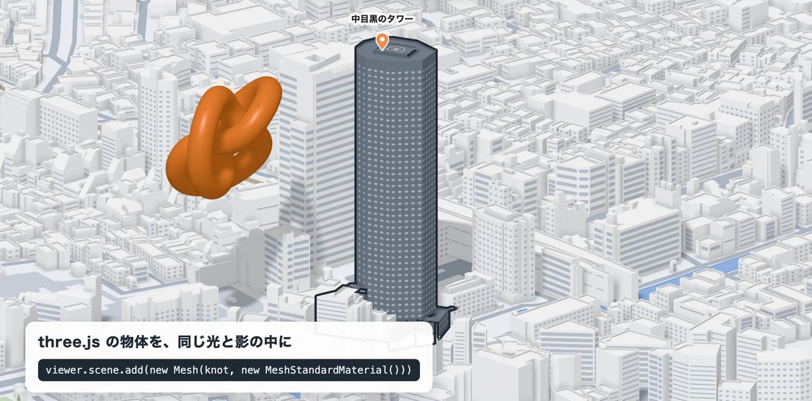
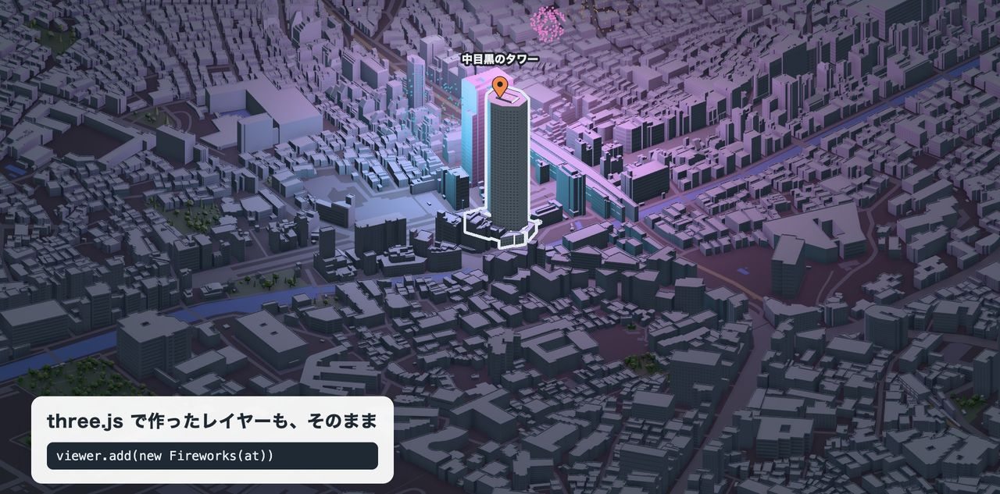
viewer.scene に自分のメッシュ・ライト・マテリアルを加えられるLayer を作って、
Web のページは、いちばん多くの人の目に触れる場所。
そこに PLATEAU を載せる手間を、数行にしました。
不動産、観光、防災、自治体、お店。
使う人が増えるほど、3D 都市モデルは
暮らしの身近な道具になります。
アルファ版を公開中。npm（@plateau-ui/core）と GitHub、MIT ライセンス。
plateau-ui は個人が開発しているオープンソースのライブラリで、国土交通省・PLATEAU の公式なものではありません。